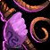
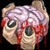
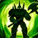
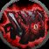

Warlock
Patch Notes
 Balance Changes
Balance Changes
 New Spells and Abilities
New Spells and Abilities
-
 Incinerate is now trainable at level 40:
Incinerate is now trainable at level 40:
-
Deals Fire damage to your target and additional Fire damage if the target is affected by an Immolate spell.
-
 Demonic Sacrifice has been reworked and is now a baseline spell, trainable at level 25:
Demonic Sacrifice has been reworked and is now a baseline spell, trainable at level 25:
-
Sacrifices your summoned demon, replacing this spell with a new one for 30 min. The effect is cancelled if any Demon is summoned.
-
Imp: Singe Magic - Removes 1 harmful magic effect from a friendly target. 10 sec cooldown.
-
Voidwalker: Void Shield - Reduces all spell damage taken by 20% for 6 sec. 2 min cooldown.
-
Succubus:

Whiplash - Deals Shadow damage and knocks the target backwards. 20 sec cooldown.
-
Felhunter:

Spell Lock - Interrupts spellcasting, preventing any spell in that school from being cast for 6 sec. 25 sec cooldown.
-
Felguard:

Pursuit - Charge an enemy and deal 100% weapon damage. 30 sec cooldown.
-
 Fel Armor is now trainable at Level 50:
Fel Armor is now trainable at Level 50:
-
Surrounds the caster with fel energy, increasing spell damage and healing by an amount equal to 40% of your Spirit. Only one type of Armor spell can be active on the Warlock at any time. Lasts 30 min.
 Hero's Journey
Hero's Journey
Upon reaching level 60, the Warlock goes on a dark journey to learn the Infernal Repository spell:

Infernal Repository
-
Summon a cache from the nether, which can store reagents including Soul Shards, Infernal Stones, Demonic Figurines, etc. Spells that require reagents can pull from the repository even if it isn't currently on this plane of existence. Lasts 5 min. 30 min cooldown.
Balance Changes Key

 labels the expansion Blizzard made that change.
labels the expansion Blizzard made that change. labels an idea Blizzard made during SoD.
labels an idea Blizzard made during SoD.
 labels a new idea I came up with.Thanks for exploring! - Mynta, GM of Aggrophobia, Fear bombing mobs since 2006, Andorhal PvP | NA (@mynlol on Discord)
labels a new idea I came up with.Thanks for exploring! - Mynta, GM of Aggrophobia, Fear bombing mobs since 2006, Andorhal PvP | NA (@mynlol on Discord)